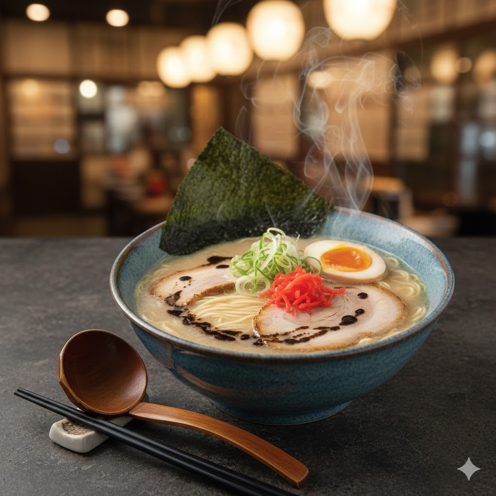
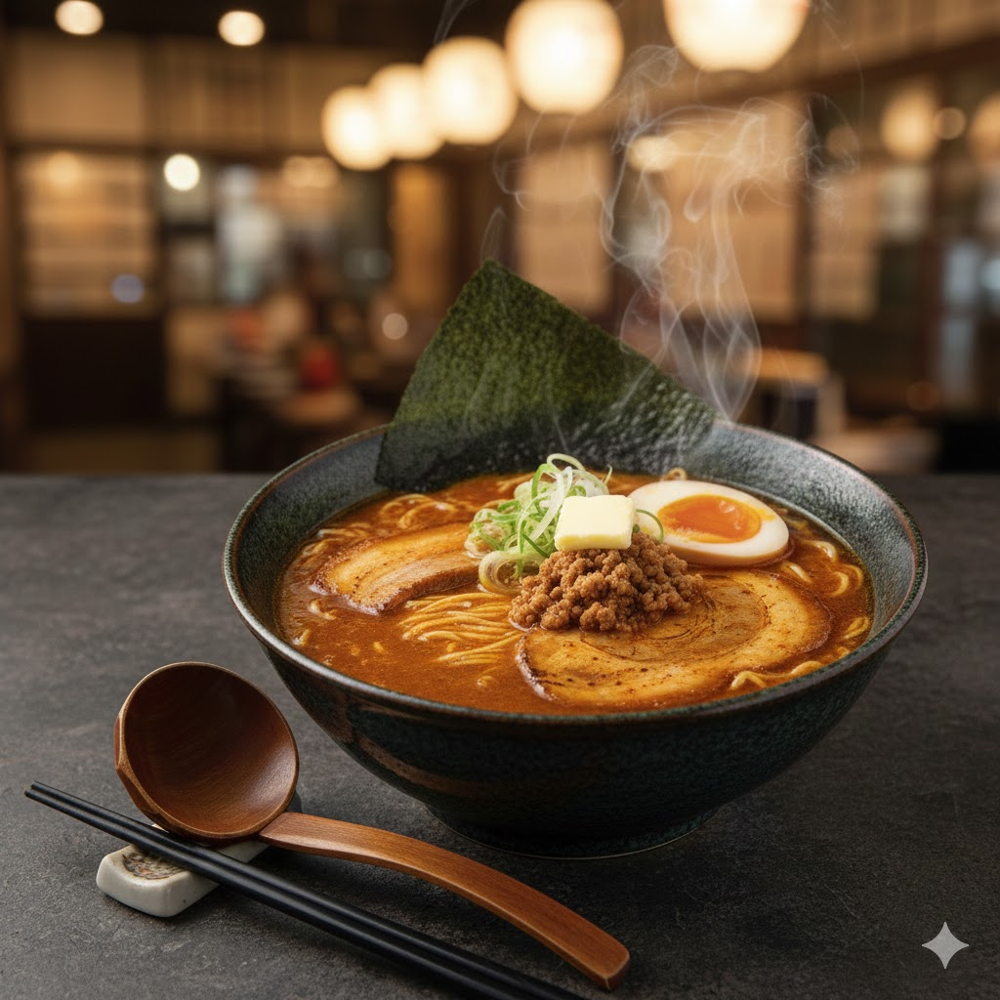
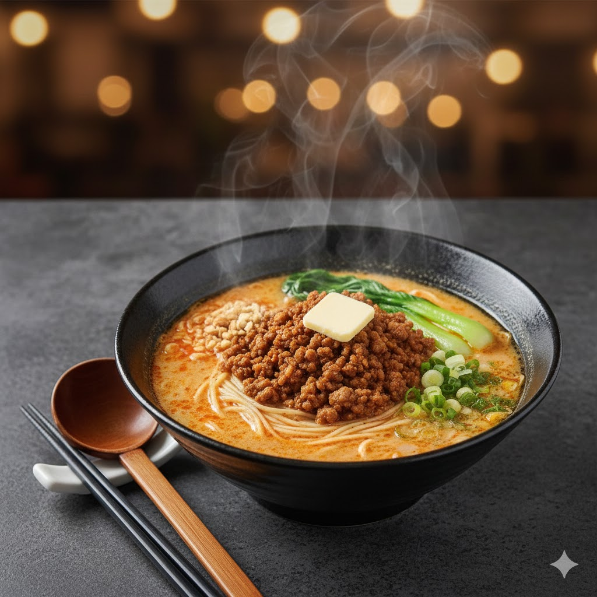

Welcome to Kuma Ramen!

At Kuma Ramen, we bring the authentic flavors of Japan to the heart of Flagstaff, Arizona! Our master chefs craft each bowl with passion and precision, using traditional recipes passed down through generations. From the rich, creamy Tonkotsu broth that simmers for over 18 hours to the perfectly cooked noodles with just the right amount of chew, every element of our ramen is designed to transport your taste buds straight to the streets of Tokyo. Whether you're a ramen enthusiast or trying it for the first time, Kuma Ramen offers an unforgettable dining experience that will keep you coming back for more!
Located conveniently at the Franke College of Business, we're proud to serve the Northern Arizona University community and beyond! Our cozy, modern atmosphere provides the perfect setting to enjoy a warm bowl of comfort food, whether you're grabbing a quick lunch between classes, meeting friends for dinner, or celebrating a special occasion. We take pride in using only the freshest ingredients, locally sourced when possible, and our menu features five signature ramen varieties to satisfy every palate. Come visit us and discover why Kuma Ramen has become Flagstaff's favorite destination for authentic Japanese cuisine! Don't forget to check out our menu page to see all of our delicious offerings!
Our Signature Dishes
Tonkotsu Ramen
Rich pork bone broth, slow-cooked for 18 hours with tender chashu pork

Miso Ramen
Savory fermented soybean broth with butter, corn, and fresh vegetables

Spicy Tantanmen
Bold sesame paste with aromatic chili oil and minced pork